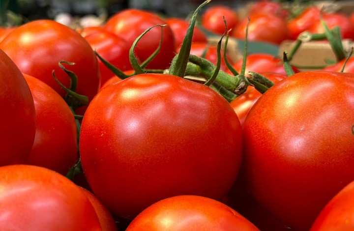
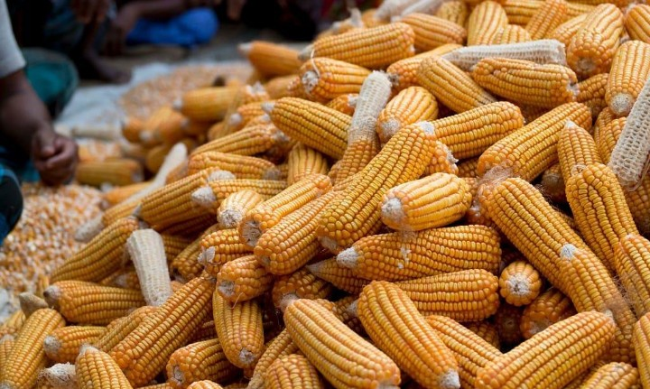
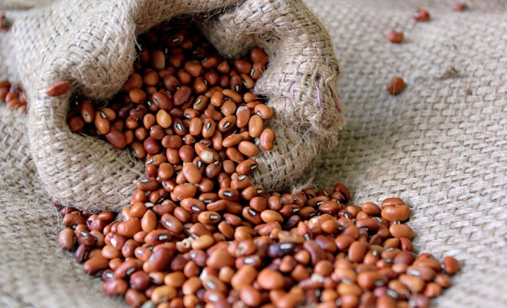
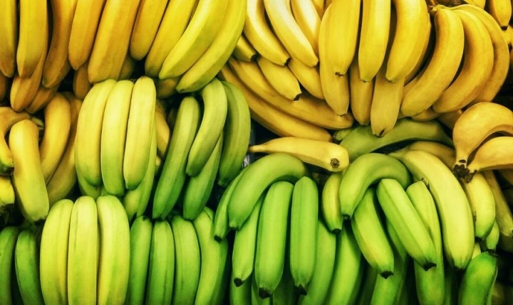

Tomatoes
Juicy, vibrant tomatoes for everyday meals and fresh sauces.
Grown together in Kampala
We bring local farmers and consumers closer through fresh, locally grown produce and a shared commitment to sustainable farming.
Rooted in Banda. Growing with our community.
 Locally grown, community powered
Locally grown, community powered
About our cooperative
Kampala AgroCoop connects local farmers with consumers by promoting fresh agricultural produce, cooperation, and sustainable farming. We work together to make it easier for farmers to reach customers and for families to find produce from the communities around them.
See this week's produce pricesFrom our farms

Juicy, vibrant tomatoes for everyday meals and fresh sauces.

A versatile staple, carefully grown and ready for your kitchen.

A nourishing favourite, full of flavour for family meals.

Fresh, naturally sweet bananas from local growers.
Get in touch
Contact us to learn about our cooperative, local produce, or working with our farmers.
Location
Banda, Kampala, Uganda
Learn more
Ministry of Agriculture, Animal Industry and Fisheries